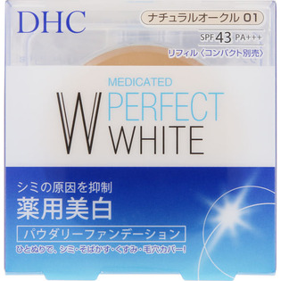
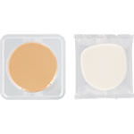

返回列表
产品名称：薬用PWパウダリーファンデーション＜リフィル＞ ナチュラルオークル01

ディーエイチシー 薬用PWパウダリーファンデーション＜リフィル＞ ナチュラルオークル01 １０ｇ（医薬部外品）
メーカー ディーエイチシー
JANコード 4511413306413
商品の特徴
シミの原因を抑制
ひとぬりで、シミ・そばかす・くすみ・毛穴カバー！
SPF43 PA＋＋＋
成分・分量
-
用法及び用量
１．化粧下地で肌を整えた後、専用スポンジにファンデーションを適量とります。
２．顔の中心から外側へ、スポンジでやさしくすべらせるように塗布します。
※ 水を使用する場合は、スポンジに水を含ませて軽くしぼってからファンデーションをとってください。